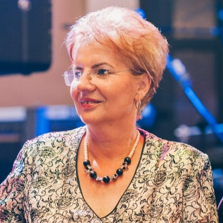

Un soare imens, rosu, portocaliu, se prefigureaza deasupra capului, lasand impresia de apocalipsa. Sunt in picioarele goale in drum, in fata casei si o emotie puternica ma impresoara, imi intra in fiecare por si creste continuu emanand teama, nesiguranta, iminenta sfarsitului. Involuntar, nu-mi pot lua privirea de la cer, dar nici nu pot reactiona. Ceva ma pironeste intr-o neputinta de a face ceva.
Sunt copil, o fetita firava, blonda, cu ochii caprui, ba chiar usor diferiti ca si nuanta.
Si asta a devenit o bravura; ''nimeni nu mai este ca mine''! Culoarea ochiului drept, un caprui mai inchis am mostenit-o de la mama, iar cea a celui stang, un caprui usor mai deschis, de la tata.
Intotdeauna am spus ca prin ochiul drept vad realitatatea asa cum este, mai logic, mai rational, pentru ca asa este si mama un om puternic pe care poti sa te bizui oricand, careia daca ii ceri ajutorul esti sigur ca se va rezolva.
Prin ochiul stang vad partea romantica a vietii, pentru ca tatal meu este dincolo de seriozitatea pe care o afiseaza si care te face sa-l respecti neconditionat, un visator, un poet asa cum ii spunem noi.
De cand eram mica l-am admirat cat de frumos poate sa scrie. Ma ajuta la compuneri si ma gandeam cu mintea mea de copil, daca vreodata, am sa pot sa scriu si eu la fel de frumos ca si el, daca din puzzel-ul de cuvinte am sa reusesc sa le aleg cu maiestrie, pe cele mai frumoase, asa cum facea el !
Desi, fizicul arata un copil firav, cum spuneam mai devreme, sufletul si mintea erau (si sunt) intr-o continua framantare ; un copil dornic sa cunoasca, hotarat si puternic, care intotdeauna vede partea plina a paharului. Un copil neinfricat, mandru, cu spirit novator.
M-am gandit ca dorinta de cunoastere este mostenita, pentru ca radacinile sunt puternice (de care sunt mandra), dar poate fi si consecinta aranjamentelor astrale (sunt Varsator).
Capacitatea de a fi lider in orice colectivitate s-a imbinat perfect cu spiritul de echipa si cu aplecarea permanenta de a face bine.
Dar, ce este binele? M-am gandit de multe ori. Binele este totdeauna reflexia convingerilor
proprii, este binele vazut prin Eu-l fiecaruia, este perceptia vietii, a realitatii si a felului cum iti
proiectezi viitorul.
A schimba lumea asa cum crezi, respectand niste dogme, este o utopie, dar fiecare dintre noi
are datoria sa incerce. Ce, de fapt? Sa fim mai buni, sa avem rabdare, sa vedem dincolo de
aparente, sa daruim ca sa primim, sa fim intelepti si sa lasam tot timpul locul din dreapta, sau
stanga noastra liber, astfel incat sa avem, un loc disponibil permanent, langa noi si sa-l oferim
cu blandete celui care are nevoie.
Este un vis, atat, doar un vis care m-a marcat toata viata si care mi s-a confirmat in ’99, cand la eclipsa am recunoscut drumul, cerul si acea atmosfera apocaliptica, teama care era a momentului sau a trecutului?!; se confundau si nu stiam daca temporalitatea se contura in acel prezent sau altcandva.
De asta data eram cu copiii mei. I-am luat pe amandoi si am plecat la tara in dorinta de a-i proteja. Urma sa fie o eclipsa totala, nemai traita si aveam teama sa nu fie mai mult de atat.
Eram in drum, in fata casei si o emotie puternica ma impresoara, imi intra in fiecare por si creste continuu emanand teama, nesiguranta, iminenta sfarsitului. Involuntar, nu-mi pot lua privirea de la cer, dar nici nu pot reactiona. Ceva ma pironeste intr-o neputinta de a face ceva. Si totusi, de data aceasta faceam ceva, ii tineam strans pe amandoi avand convingerea, desi era iluzie, ca-i protejez.
O, Doamne, cat de ciudata poate fi mintea unui parinte; cum poate el sa gandeasca ca poate sa tina piept destinului, ca poate fi scut in calea primejdiei! Asa simteam. Am vazut soarele imens, rosu, portocaliu, apoi am vazut cum se micsoreaza, treptat, iar cand a disparut de tot, numai o stea se mai zarea alaturi pe cer. S-a racit brusc, pret de cateva secunde si acesta a fost apogeul, creierul s-a golit de orice urma de logica devenind alaturi de trup un simplu spectator. Eram in vis, eram cu copiii mei, era iluzie, era realitate....?!?
Cat de departe e oare vremea cand ma jucam in casa vecinilor mei de la Corbi?! Aveam poate cinci ani si mergeam singura, pe o ulita stramta, pana la ei. Erau numai fete si bineinteles ca pentru mine era un univers deosebit; o casa mica, de poveste, cu pamant pe jos, cu doua paturi batute in pamant, mici si ele, asezate fata in fata.
Acolo, in casa, in camera in care dormeau, mai intram, dar in ''camera buna'' foarte rar.
Imi amintesc ca era o lavita destul de inalta pe care erau asezate plapumi, toale (un fel de paturi de lana), fote si ii puse unele peste altele intr-o ordine desavarsita. Intr-un colt, intr-o ulcica de lut erau flori de plastic, niste curiozitati pentru acele vremuri. Mai erau scaune cu spatar, tot din lemn confectionate, iar pe ele erau asezate pernele imbracate in panza brodata, o multime de perne!
Pe jos, peste pamantul bine batatorit erau asezate simetric presuri de lana, tesute la razboi. Peretii erau alb-galbui, nevaruiti de mult timp, acoperiti de stergare cusute de mana, cu multa migala.
Cel mai mare stergar inconjura icoana, pe Maica Domnului, cu pruncul in brate, pictata pe lemn, usor stangaci, dar emana o forta launtrica, impunand respect si resemnare.
Mai era si o fereastra, cu ochiuri mici, de geam si cu zabrele care aveau menirea sa pazeasca ''camera buna'', camera cu zestrea fetelor. Fara aceste lucruri iesite din mana femeilor, fetele lor nu se puteau marita; era o lege a firii.
De fapt, tot ceea ce era in casa, era facut la razboiul pe care si eu il admiram, incercand sa descifrez modalitatile de a alcatui floricele, modele diverse pe care le realizau cu maiestrie. Mi se parea un mare efort sa introduci suveica printre ite, intr-o anumita ordine, anticipand ceea ce trebuia sa iasa.
Pana la 6 ani am trait la Corbi, in casa bunicilor mei. Noi aveam o camera mare, frumos aranjata si foarte curata.
Cum intrai, in dreapta era o soba varuita intr-un alb-albastrui, in care tata baga lemne mereu, chiar si noaptea, pentru ca era friguroasa. Apoi era un pat mare, o masa si un sifonier.
Fereastra dadea in curte, dar eu de-abia ajungeam la ea, asa ca nu prea vedeam.
Cand stateam in pat, in dreptul ferestrei imi imaginam o casuta de jucarie, in care puteam intra pe niste trepte mici. Acolo, era un pat si in dreptul lui niste papuci de casa, era si o masuta pe care erau asezate multe carti de povesti, cu multe ilustratii si un creion mare. De fapt aveam o carte de povesti cu niste ursuleti si iepurasi care aveau papuci de casa si pijamale frumoase.
In mintea mea se contopeau imaginile din carte cu ceea ce as fi dorit sa fie.

Intr-un colt al camarutei mele de vis era papusica mea si niste jucarioare de plus.
Imi placea sa ma fac ca citesc si sa scriu, desi nu stiam inca literele, dar cifrele le stiam si socoteam si numaram fara sa obosesc, cu o placere imensa.
Seara cand stateam in pat, cu lumina aprinsa ma uitam in tavan si vorbeam cu ''budicile''.
Acestea erau niste rotocoale de lumina si umbra, niste cerculete, care datorita luminii se miscau pe tavan. Le povesteam ce am facut in timpul zilei; erau prietenii mei imaginari, carora ma confesam fara ocolisuri. De fapt la acea varsta, viata era colorata, doar in alb sau negru. Nuantele apar mult mai tarziu si pana la doisprezece ani nu ai interpretari, rautati sau minciuni fie ele bune, sau rele.
Pe masa din camera noastra era un radio mare, cu doua butoane laterale. Dintr-unul il porneam, iar din celalalt reglam volumul. La mijoc erau clape, din care schimbam posturile, dar ceea ce este mai nostim, este faptul ca eu imi imaginam niste omuleti mici asezati pe o scena in interiorul radio-ului care vorbeau de acolo.
Mamei ii placea sa asculte piese de teatru si uneori stateam si eu cuminte langa ea, incercand sa inteleg ce vorbeau omuletii mei.
Cand era muzica, dansam in pat, imbracata intr-o camasa de noapte, lunga, camasa in care ma simteam printesa si spuneam ca voi deveni ''baletista''.
Ce ani frumosi, fara nicio grija, cu minima preocupare de a descoperi, cu mirare, tainele vietii. Fiecare lucru nou era pentru mine o minune si voiam sa-l cunosc, sa-l pipai, sa-l miros; sa mi-l insusesc vizual.
Mi-aduc aminte si poate este chiar prima mea amintire, cum intr-o zi m-au imbracat frumos, intr-un costumas nou si m-au asezat pe un scaunel, in curte. Ce credeti? Pozarul satului era in fata mea cu un aparat ciudat, care la un moment dat a sclipit deranjindu-mi ochisorii.
La varsta de doi ani, parintii mei mi-au facut prima poza, dar nu sunt sigura daca e aceasta, prima, sau alta, in care tatal meu ma tinea in brate. Atunci, la randul meu, aveam o papusica in maini.
Sunt poze frumoase, care imi amintesc de acele timpuri minunate si in acelasi timp de minunatii mei parinti.
Oare v-am spus cat de mult ii iubesc si ii respect? Datorita lor exist. Prin venele mele curg picaturi din sangele lor, picaturi de ADN combinat, intr-o secventa intamplatoare sau nu, aducand, din ''arborii'' familiilor, gene dominante sau recesive. Cum as putea, altfel sa vorbesc de radacinile mele? M-as dezumaniza, m-as depersonaliza daca, macar in vis, as gandi astfel. Ar fi ca o emanatie, din negura abisului a tot ceea ce ar putea fi mai rau in omenire. Asa ceva nu se poate.
Curtea casei de la Corbi era pietruita si avea o poarta imensa pe care cu greu o deschideam si dincolo de ea mi se parea ca exista alt univers in care-mi doream sa patrund. Si pentru ca nu puteam sa deschid poarta, intr-o zi, am gasit o solutie.
Bunica avea o tola facuta dintr-o piele de dihor; am luat-o si am aruncat-o spre gainile care circulau nestingherite prin curte. Efectul scontat s-a produs; au inceput sa zboare haotic, reusind chiar sa treaca peste gard.
Atunci, bunica a deschis poarta si a iesit dupa ele, neglijand faptul ca eram si eu prin preajma.
Am iesit asadar, avand in suflet bucuria primei victorii. Ma uitam curioasa la strada, la oameni, la alte garduri si porti si dintr-o data am constatat ca totul era banal si parca mi-am potolit setea de explorare. Se nastea sentimentul de vina de a fi facut ceva nepermis.
Le-a bagat in curte, cu grija si atunci a realizat ca eu eram in spatele intamplarii.
M-a luat de manuta si am plecat sa facem o vizita scurta unei vecine. Am vorbit, am ras, dar din cand in cand imi amintesc ochii bunicii, care zambeau multumiti ca eu sunt fericita.
Cata intelepciune, cata forta, cat potential educativ, pot sa aiba oamenii.
Bunica mea, desi nu avea prea multe studii, era o femeie educata. Citise, invatase, dar mai ales, avea in spate un bagaj solid de educatie si cultura agonisit din generatii. Era fiica de invatator, iar mama ei fiica de preot.
Cele doua profesii, de altfel, constituiau polii culturali si educativi ai vietii satului. La cine apelau oamenii pentru sfaturi - la preot si la invatator si pe cine respectau cel mai mult - pe preot si pe invatator.
Cum poate fi reliefat sufletul de mama? Dupa ce schema logica functioneaza, are intrari si iesiri, are adevaruri universal valabile, intrebari cu doua variante de raspuns: DA si NU?
E numai logica sau e mai ales mult sentiment?!
In sufletul unei mame ''chimia'' sfideaza orice evidenta; se petrec lucruri numai de ea stiute, numai de ea simtite.
In momentul in care nasti si iti arata copilul (''odorul''), chiar daca in secunda urmatoare ar trebui sa-l recunosti dintr-o mie de copii, cu siguranta ai reusi. Se intipareste pe retina figura micutului si se declanseaza un ''clic'' care te va lega pe veci de acest dar minunat.
Da, nasterea este un dar divin; esti coplesita de un sentiment inaltator, ne mai intalnit si se produce o legatura indestructibila intre mama si copil, adica nimeni si nimic nu poate interveni intre cei doi. Aceasta legatura este ancestrala, dincolo de intelegerea noastra.
Copilul, in cele mai grele momente ale vietii, se va gandi involuntar la mama.
Mama va ramane totdeauna, ca o icoana, in suflet; ea este spiritul spre care imaginar, intinzi mana la nevoie.
Tatal este materia, rationalul, pamantescul.
Un tata este perceput ca pe un sprijin material, el te ajuta cu sfaturi si iti intinde bratul la propriu, te mangaie fara gesturi. El vegheaza, ca toti factorii, care pot concura la realizarea ta materiala, sa fie stimulati.